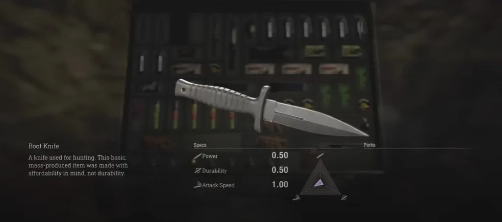
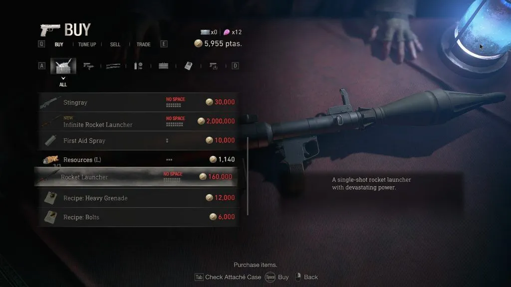

Weapon List
| No | Gambar | Weapon | power | Ammo Capacity | Reload Speed | Rate of Fire | Precision |
|---|---|---|---|---|---|---|---|
| 1 | Melee | 0.6 | - | - | - | - | |
| 2 |  | Boot Knife | - | - | - | - | - |
| 3 | Kitchen Knife | - | - | - | - | - | |
| 4 | Fighting Knife | 1 | - | - | - | - | |
| 5 | Broken Butterfly | 15 | 6 | 0.52s | 0.9 | 2 | |
| 6 | Killer Seven | 20 | 7 | 1s | 0.81 | 2.5 | |
| 7 |

|
Sg-09R | 1 | 10 | 1s | 1 | 4 |
| 8 | Matilda | 1.3 | 18 | 1s | 0.96 | 3.5 | |
| 9 | Punisher | 0.90 | 12 | 1.1s | 1.05 | 4.5 | |
| 10 | Sentinel Nine | 1.1 | 19 | 0.9s | 1,19 | 4 | |
| 11 |

|
Blacktail | 1.4 | 9 | 1.2s | 1.19 | 4.2 |
| 12 | Red9 | 1.5 | 8 | 0.85s | 0.90 | 3 | |
| 13 | StingRay | 3.30 | 10 | 0.84s | 0.73 | 5.40 | |
| 14 | CQBR Assault Rifle | 2 | 20 | 0.85s | 2.50 | 5.00 | |
| 15 |

|
LE 5 | 0.40 | 50 | 0.78s | 2.50 | 4.50 |
| 16 | TMP | 0.50 | 30 | 1s | 2.5 | 2 | |
| 17 | SR M1903 | 2.5 | 5 | 0.46s | 0.42 | 5.3 | |
| 18 | Riot Gun | 6.4 | 7 | 1 | 0.75 | 3.5 | |
| 19 | W-870 | 5.60 | 5 | 0.60s | 0.45 | 2.80 | |
| 20 | Skull Shake | 5.40 | 2 | 0.98 | 0.49 | 2.30 | |
| 21 | Striker | 9 | 12 | 0.25s | 1.13 | 2 | |
| 22 | Bolt Thrower | 1.2 | 3 | 0.78 | 0.70 | 3 | |
| 23 |  | Rocket Launcher | ∞ | 1 | - | - | - |
| 24 | Infinite Rocket Launcher | ∞ | ∞ | - | - | - | |
| 25 | Chicago Sweeper | 0.4 | 50 | 0.78s | 2.5 | 3 | |
| 26 | Primal Knife | 0.8 | - | - | - | - | |
| 27 | HandCannon | 12 | 5 | 0.46s | 0.53 | 1.8 |
Melee
1. Combat Knife
Free To Get: Sebagai bagian dari kampanye utama, Anda akan secara otomatis mendapatkan pisau ini sebagai senjata awal Anda segera setelah Anda mulai memainkan game dari Bab 1.
Ketika Sudah Full Upgrade akan mendapatkan stats sebagai berikut :
Power = 1.00
Durability = 2.20
Attack Speed = 1.20
2. Boot Knife
Free To Get: Diperoleh sebagai barang koleksi atau item drop di Chapter 7.
Note : Tidak bisa di upgrade.
3. Kitchen Knife
Free To Get: Diperoleh dari Chapter 1 sebagai barang koleksi atau item drop.
Note : Tidak bisa di upgrade.
4. Fighting Knife
Free To Get: Diperoleh sebagai barang koleksi dari Chapter 14 setelah menyelesaikan pertarungan bos dengan Krauser.
Note : Tidak bisa di upgrade.
Magnums
5. Broken Butterfly
Buy To Get: dibeli dengan Biaya 42.000 ptas di merchant.
Ketika Sudah Full Upgrade akan mendapatkan stats sebagai berikut :
Power = 27.0
Ammo Capacity = 10
Reload Speed = 0.86
Rate Of Fire = 1.33
Precision = 2.00
6. Killer Seven
Buy To Get: dibeli dengan Biaya 77.700 ptas di pedagang.
Ketika Sudah Full Upgrade akan mendapatkan stats sebagai berikut :
Power = 28.0.
Ammo Capacity = 15
Reload Speed = 1.40
Rate Of Fire = 1.16
Precision = 2.50
Handgun
7. Sg-90R
Free To Get: Didapat Ketika Pertama Kali memainkan misi sebagai Leon.
Ketika Sudah Full Upgrade akan mendapatkan stats sebagai berikut :
Power = 2.00
Ammo Capacity = 18
Reload Speed = 1.40
Rate Of Fire = 1.63
Precision = 3.50
8. Punisher
Buy To Get: Dapat ditukar dengan 5 spinel di merchant.
Ketika Sudah Full Upgrade akan mendapatkan stats sebagai berikut :
Power = 1.90
Ammo Capacity = 24
Reload Speed = 1.50
Rate Of Fire = 1.91
Precision = 4.50
9. Sentinel Nine
Buy To Get: harus membeli Bundel Paket DLC Ekstra. Atau, Anda dapat membeli senjata ini secara terpisah dari bundel seharga $ 1,99. Anda dapat memeriksanya di steam
Ketika sudah Membeli DLC tersebut bisa diambil langsung di penyimpanan / storage disamping tempat save.
Ketika Sudah Full Upgrade akan mendapatkan stats sebagai berikut :
Power = 1.90
Ammo Capacity = 31
Reload Speed = 1.30
Rate Of Fire = 2.00
Precision = 4.00
10. Blacktail
Buy To Get: Dapat dibeli dengan Biaya 24.000 ptas di merchant.
Ketika Sudah Full Upgrade akan mendapatkan stats sebagai berikut :
Power = 2.40
Ammo Capacity = 13
Reload Speed = 1.60
Rate Of Fire = 2.20
Precision = 4.20
11. Red9
Buy To Get: Diperoleh dari Chapter 4 sebagai barang koleksi. Gunakan perahu di dermaga untuk pergi menuju harta karun di Danau, yang terletak di sebelah utara Rumah Perahu dan di sebelah tenggara Pemukiman Tepi Danau di peta Anda.
Di sana Anda akan menemukan perahu kosong yang tertutup ganggang hijau. Masuk dan telusuri seluruhnya, jarah setiap peti, di mana salah satunya juga berisi pistol ini.
Ketika Sudah Full Upgrade akan mendapatkan stats sebagai berikut :
Power = 2.70
Ammo Capacity = 16
Reload Speed = 1.25
Rate Of Fire = 1.26
Precision = 3.00
Assault Riffle
12. stingray
Buy To Get: Dapat dibeli dengan Biaya 30.000 ptas di merchant.
Ketika Sudah Full Upgrade akan mendapatkan stats sebagai berikut :
Power = 4.90
Ammo Capacity = 18
Reload Speed = 1.18
Rate Of Fire = 0.92
Precision = 5.40
13. CQBR Assault Riffle
Buy / free To Get: Dapat dibeli dengan Biaya 40.000 ptas di merchant, Dapat ditemukan di dalam kotak kunci persegi yang terletak di dalam perpustakaan. Anda harus memasukkan perangkat kubik ke dalam kotak untuk membukanya.
Ketika Sudah Full Upgrade akan mendapatkan stats sebagai berikut :
Power = 3.40
Ammo Capacity = 32
Reload Speed = 1.25
Rate Of Fire = 2.50
Precision = 5.00
SMGs
15. LE 5
Buy / free To Get: Dapat dibeli dengan Biaya 35.000 ptas di merchant, Anda harus terlebih dahulu mengakses kartu kunci level 1 untuk mendapatkan senjata ini.
Ketika Sudah Full Upgrade akan mendapatkan stats sebagai berikut :
Power = 1.20
Ammo Capacity = 60
Reload Speed = 1.05
Rate Of Fire = 2.50
Precision = 4.50
16. TMP
Buy / free To Get: Dapat dibeli dengan Biaya 10.000 ptas di merchant.
Ketika Sudah Full Upgrade akan mendapatkan stats sebagai berikut :
Power = 1.10
Ammo Capacity = 70
Reload Speed = 1.40
Rate Of Fire = 2.50
Precision = 2.00
Sniper Rifle
17. SR M1903
Buy / free To Get: Dapat dibeli dengan Biaya 12.000 ptas di merchant.
Ketika Sudah Full Upgrade akan mendapatkan stats sebagai berikut :
Power = 5.30
Ammo Capacity = 13
Reload Speed = 0.61
Rate Of Fire = 0.53
Precision = 5.20
Shotguns
18. Riot Gun
Buy To Get: Dapat dibeli dengan Biaya 28.000 ptas di merchant.
Ketika Sudah Full Upgrade akan mendapatkan stats sebagai berikut :
Power = 12.8
Ammo Capacity = 12
Reload Speed = 0.97
Rate Of Fire = 1.10
recision = 3.50
19. W-870
free To Get: Pergilah ke tengah alun-alun desa dan masuklah ke rumah yang ditinggalkan dengan tangga yang ditunjukkan pada peta Anda.
Naiki tangga ke atas, dan Anda akan segera melihat W-870 di dinding dalam bingkai kayu persegi panjang.
Ketika Sudah Full Upgrade akan mendapatkan stats sebagai berikut :
Power = 10.1
Ammo Capacity = 10
Reload Speed = 0.95
Rate Of Fire = 0.85
Precision = 2.80
20. Skull shaker
buy To Get: Sama seperti Sentinel Nine, Anda harus membeli Deluxe Edition atau Bundel Paket DLC Ekstra untuk menggunakan senjata ini. Sekali lagi, ini juga dapat dibeli secara terpisah dari bundel seharga $ 1,99 jika Anda hanya ingin membeli ini.
Naiki tangga ke atas, dan Anda akan segera melihat W-870 di dinding dalam bingkai kayu persegi panjang.
Ketika Sudah Full Upgrade akan mendapatkan stats sebagai berikut :
Power = 9.07
Ammo Capacity = 6
Reload Speed = 1.29
Rate Of Fire = 0.9
Precision = 2.30
21. Striker
buy To Get: Dapat dibeli dengan Biaya 38.000 ptas di merchant.
Ketika Sudah Full Upgrade akan mendapatkan stats sebagai berikut :
Power = 16.2
Ammo Capacity = 24
Reload Speed = 0.62
Rate Of Fire = 1.57
Precision = 2.00
Crossbow
22. Bolt Thrower
buy To Get: Dapat dibeli dengan Biaya 10.000 ptas di merchant.
Ketika Sudah Full Upgrade akan mendapatkan stats sebagai berikut :
Power = 2.40
Ammo Capacity = 10
Reload Speed = 0.94
Rate Of Fire = 0.85
Precision = 3.00
23. Rocket Launcher
buy To Get: Dapat dibeli dengan Biaya 80.000 ptas di merchant.
24. Infinite Rocket Launcher
buy To Get: Dapat dibeli dengan Biaya 2.000.000 ptas di merchant.
Bonus Weapons
25. Chicago Sweeper
buy To Get: Dapat dibeli dengan Biaya 10.000 ptas di merchant.
Ketika Sudah Full Upgrade akan mendapatkan stats sebagai berikut :
Power = 2.00
Ammo Capacity = ∞
Reload Speed = 0.93
Rate Of Fire = 2.50
Precision = 3.00
26. Primal Knife
buy To Get: Hilangkan setiap Clockwork Castellan yang ditempatkan di setiap bab. Pisau tersebut akan tersedia seharga 1000 CP di toko konten tambahan setelah selesai.
Ketika Sudah Full Upgrade akan mendapatkan stats sebagai berikut :
Power = 1.20
Durability = 2.40
Attack Speed = 1.10
27. HandCannon
buy To Get: Selesaikan tingkat kesulitan profesional dari awal tetapi tanpa bantuan senjata bonus apa pun. Sebagai alternatif, Handcannon juga dapat dengan mudah dicapai dengan menyelesaikan semua level dalam mode Merchenaries dengan peringkat S. Mode ini baru saja diperkenalkan dalam pembaruan game terbaru.
Ketika Sudah Full Upgrade akan mendapatkan stats sebagai berikut :
Power = 36.0
Ammo Capacity = ∞
Reload Speed = 0.63
Rate Of Fire = 0.65
Precision = 1.80